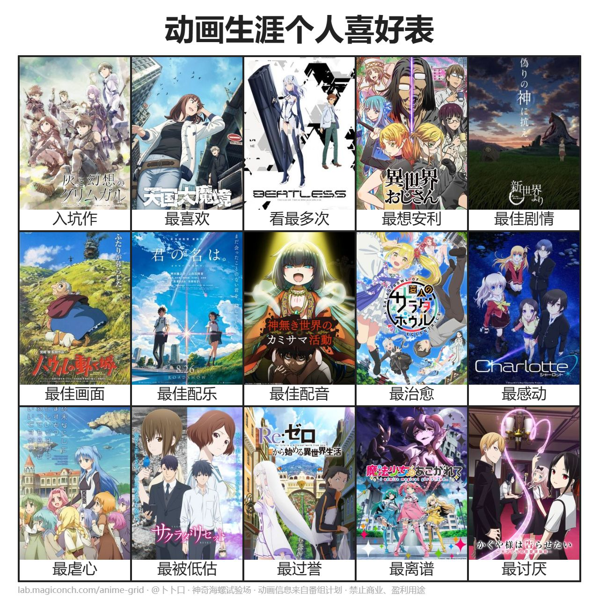
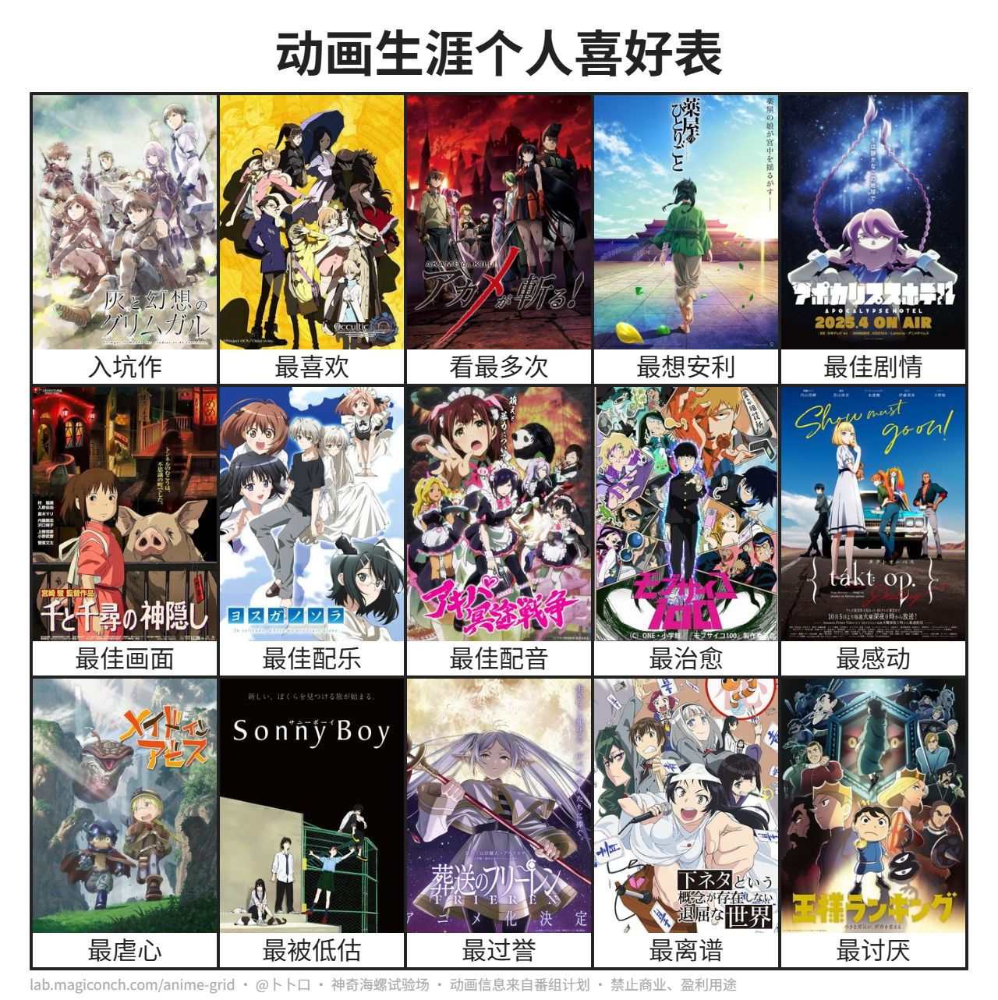

About Me
I'm Sifan Song, a 2026 graduate from Shanghai University of Finance and Economics, majoring in Data Science but more passionate about AI and Robotics.
For hobbies, I'm an anime enthusiast who loves sci-fi and fantasy genres. I enjoy playing basketball as a guard, and I've recently started learning piano, fond of J-pop and instrumental music.
My MBTI is ISTJ, and I hope you'll appreciate my rational romance and humor!
Skills
Python
C++
R
SQL
Projects
Gallery


